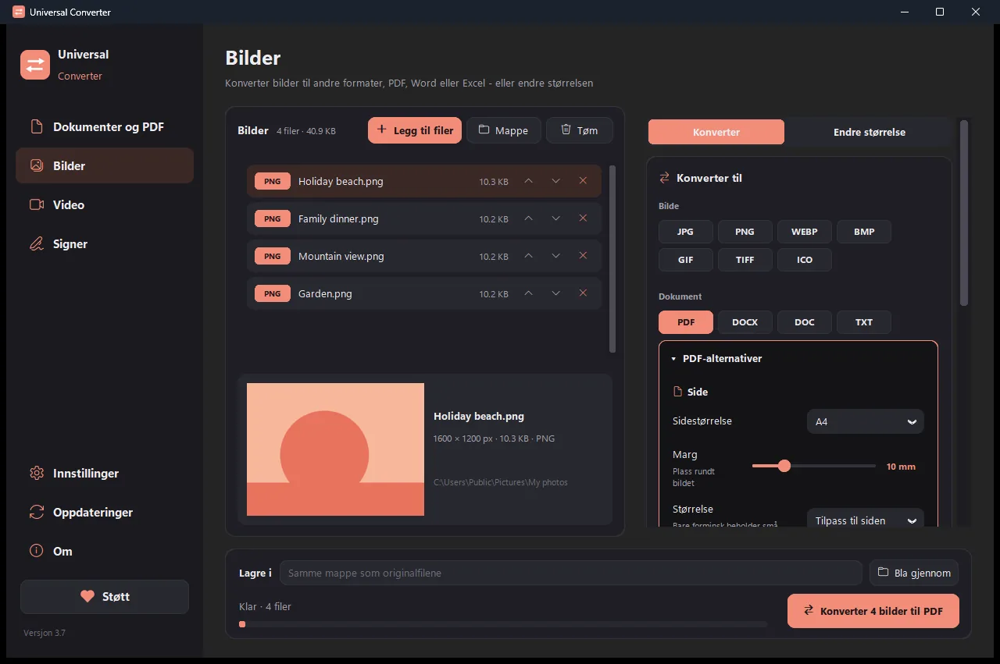
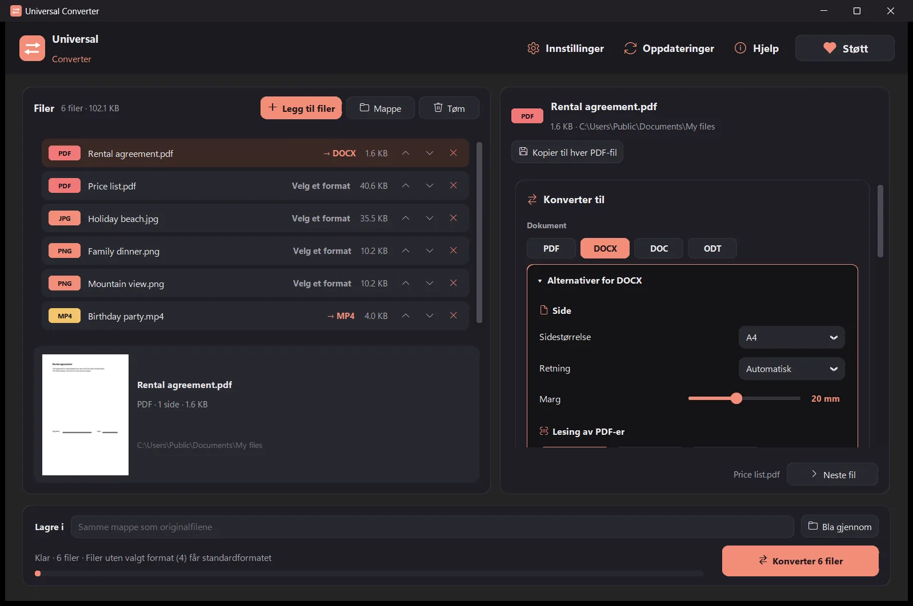
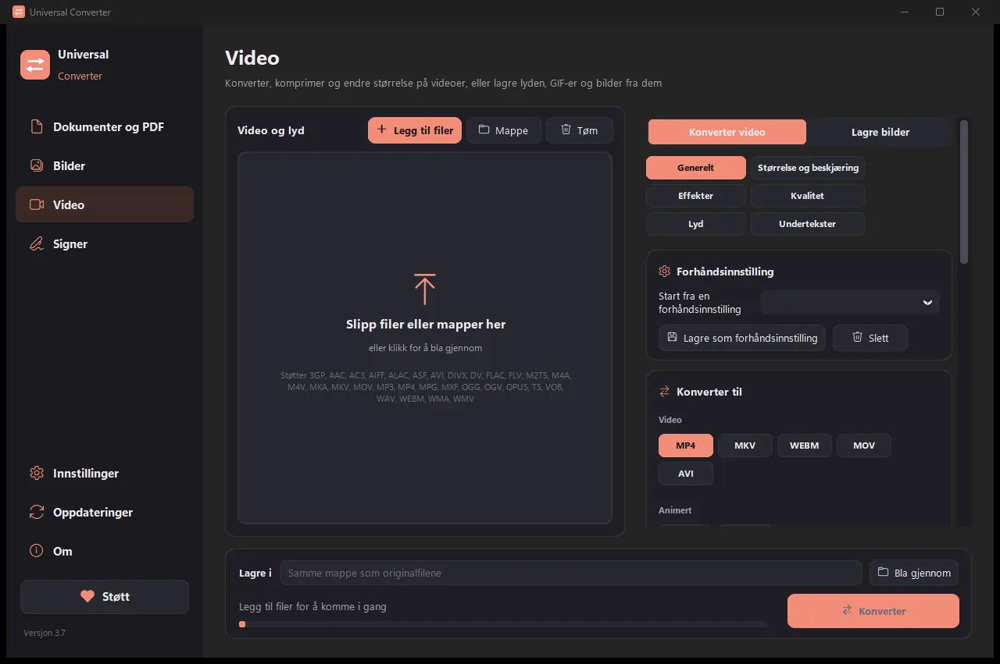
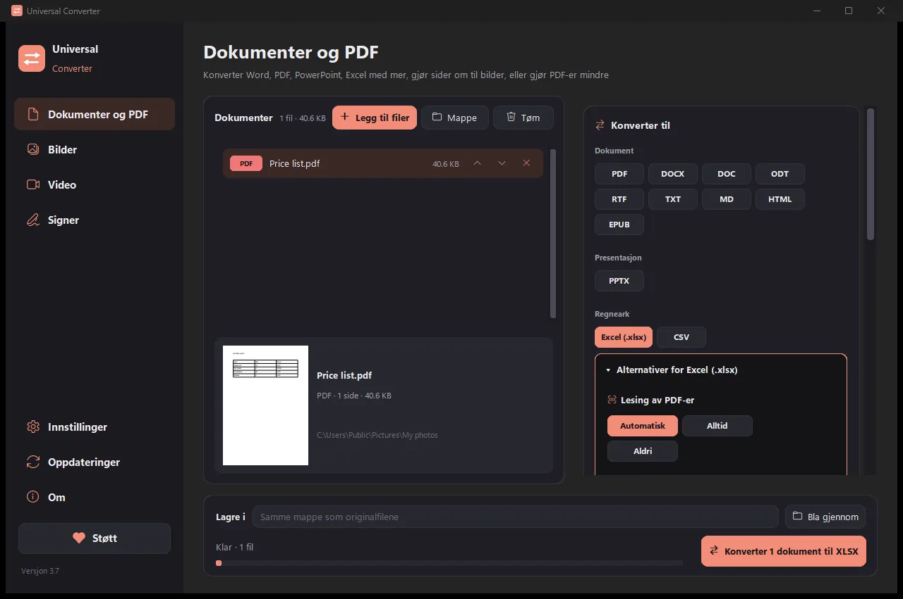
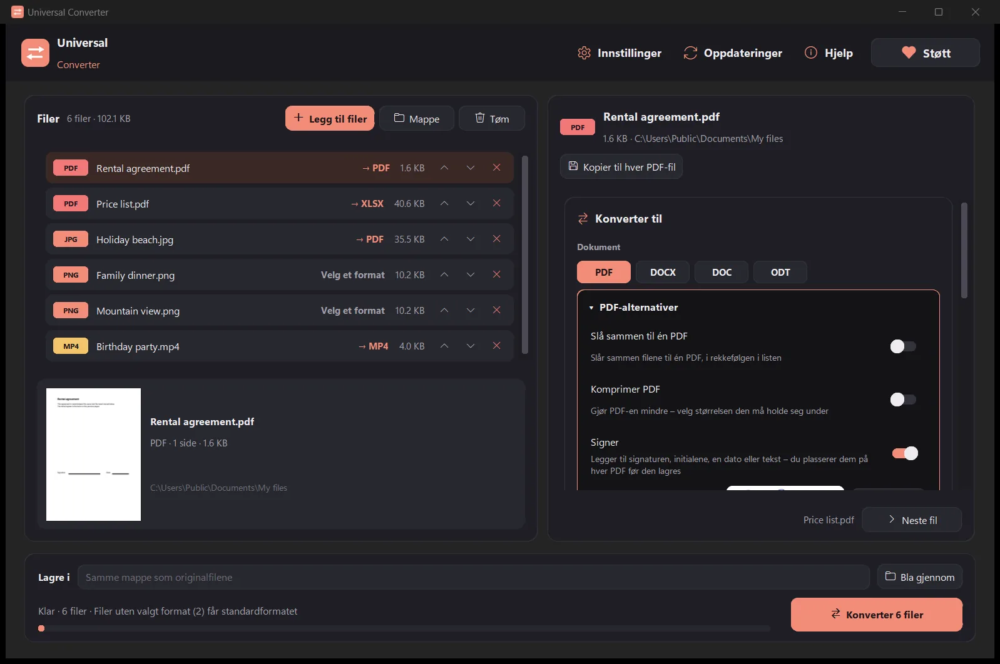

Konverter filene dine på din egen enhet
Bilder, dokumenter, video og lyd, PDF-er og tabeller til Excel, alt i én app. Ingenting lastes opp: filene dine forlater aldri enheten din.
Slik installerer og oppdaterer du
- Åpne den nedlastede .dmg-filen og dra Universal Converter til Programmer.
- Åpne appen. Første gang blokkerer macOS den fordi den ikke er signert av Apple: klikk på Ferdig.
- Åpne Systeminnstillinger > Personvern og sikkerhet, rull ned, klikk på Åpne likevel og skriv inn passordet ditt. Dette gjør du bare én gang.
Oppdateringer: hvis du tillater det når appen åpnes første gang, ser den etter nye versjoner hver gang den starter, kontrollerer den digitale signaturen deres og installerer dem når du velger det.
Slik installerer og oppdaterer du
- Trykk på Last ned for Android på telefonen.
- Åpne den nedlastede filen. Hvis Android spør, tillater du nettleseren eller filbehandleren å installere apper.
- Trykk på Installer.
Oppdateringer: appen ser etter nye versjoner omtrent én gang om dagen og sier fra når en ny versjon er klar. Last den ned på samme måte og installer den over den gamle; innstillingene dine beholdes.
Slik installerer og oppdaterer du
- Last ned .AppImage-filen.
- Gjør den kjørbar: høyreklikk, åpne Egenskaper > Tillatelser og tillat at den kjøres som program (eller i en terminal: chmod +x Universal-Converter-*.AppImage).
- Dobbeltklikk på den. Ingenting installeres: appen er denne ene filen.
Oppdateringer: hvis du tillater det når appen åpnes første gang, ser den etter nye versjoner hver gang den starter, kontrollerer den digitale signaturen og erstatter AppImage-filen der den ligger.

Privat
Alt kjører på enheten din. Ingen opplasting, ingen kø, ingen størrelsesgrenser.
Gratis
Gratis å bruke, uten reklame, uten konto og uten vannmerke.
34 språk
Engelsk, gresk, spansk, italiensk, tysk, fransk, portugisisk (Portugal og Brasil), polsk, russisk, arabisk, hebraisk, kinesisk, japansk, koreansk, tamil, afrikaans, joruba, hausa, hindi, indonesisk, tyrkisk, vietnamesisk, svensk, nederlandsk, dansk, ukrainsk, tsjekkisk, rumensk, bulgarsk, norsk, malayisk, filippinsk og swahili.
Fem verktøy i ett vindu

Dokumenter og PDF
Konverter mellom PDF, Word, ODT, RTF, TXT, Markdown, HTML, EPUB, PowerPoint og Excel. Gjør sider om til bilder, og slå sammen flere filer til én PDF. Skrifter, størrelser og farger beholdes. Gjør PDF-er mindre, til størrelsen du velger. Skanninger og utfylte skjemaer blir redigerbar tekst og tabeller, lagt opp som siden. Tabeller, også uten linjer som på kontoutskrifter, kommer inn i Word som ekte tabeller, og gamle Word-filer (.doc) og PowerPoint-filer (.ppt) kan åpnes.
Bilder
Konverter mellom JPG, PNG, WEBP, TIFF, BMP, GIF og ICO. Endre størrelse i piksler, prosent eller filstørrelse, slå sammen bilder til en PDF- eller Word-fil, og les teksten i bilder (OCR). PDF-er kan også legges til: hver side blir et bilde.

Video
Konverter videoer mellom MP4, MKV, WebM, MOV og AVI, og komprimer dem med AV1, H.265, H.264 eller VP9. Klipp, beskjær, roter og endre størrelse, lag GIF-er, lagre bilder fra videoen, eller behold bare lyden som MP3, M4A, FLAC, WAV, OGG eller Opus. Med flere videoer kan hver av dem ha egne innstillinger. På Android: MP4, MKV, WebM, MOV eller GIF, eller lyden som M4A, OGG eller WAV; klipp, beskjær, roter, endre størrelse og lagre bilder.

Excel
Hent tabeller ut av PDF-er, skanninger og bilder til Excel eller CSV: kontoutskrifter, fakturaer, prislister. Leser gresk, engelsk, spansk og mer enn 30 andre språk.

Signer
Signer PDF-er og fyll ut skjemaer. Skriv navnet ditt i en håndskriftstil, tegn signaturen din eller bruk et bilde av den. Appen finner signaturlinjene selv, eller du klikker eller trykker der signatur, initialer, dato, tekst eller haker skal stå. Signer mange filer på én gang; originalene forblir urørt.
- Bruker skjermkortet til video når det går: vanligvis 5 til 20 ganger raskere.
- Dra inn hele mapper: alle filene konverteres på én gang.
- Sier fra når en fil hører hjemme i en annen fane, og tar den dit med ett klikk.
- Forteller om nye versjoner; på Windows, Mac og Linux kan den installere dem for deg, digitalt kontrollert.
- Lyst og mørkt utseende, i tråd med enheten din.
Slik fungerer det
- Åpne Universal Converter og velg Dokumenter og PDF · Bilder · Video · Signer til venstre.
- Dra filene dine eller en hel mappe inn i vinduet, eller klikk på Legg til filer.
- Klikk på Konverter. De nye filene lagres ved siden av originalene, eller i mappen du velger.
Hva den kan
- Konverter en PDF til Word
- Konverter Word-dokumenter til PDF
- Slå sammen flere filer til én PDF
- Komprimer en PDF til en størrelse du velger
- Komprimer en PDF til 100 KB, 200 KB eller hvilken som helst størrelse for nettskjemaer
- Konverter PDF-sider til JPG-bilder
- Gjør et skannet dokument om til en redigerbar Word-fil
- Konverter bilder mellom JPG, PNG, WEBP med mer
- Endre størrelse på bilder eller krymp dem til en filstørrelse
- Endre størrelse på et bilde eller en signatur til 20 KB, 50 KB eller nøyaktige piksler
- Slå sammen bilder til én PDF
- JPG til PDF under 100 KB
- Kopier teksten fra et bilde (OCR)
- Komprimer en video uten å laste den opp
- Konverter videoer mellom MP4, MKV, WebM, MOV og AVI
- Lagre lyden fra en video som MP3
- Lag en GIF fra en video
- Hent tabeller fra en PDF inn i Excel
- Konverter en kontoutskrift i PDF til Excel
- Hent tabeller fra PDF-fakturaer inn i Excel
- Signer en PDF
- Fyll ut et PDF-skjema
Spørsmål
Er den virkelig gratis?
Ja. Universal Converter er gratis å bruke, uten reklame, uten konto og uten tidsbegrensning. Hvis den hjelper deg, kan du støtte utviklingen med et frivillig bidrag, men du må aldri.
Lastes filene mine opp noe sted?
Nei. Hver konvertering skjer på din egen enhet, så den fungerer også uten internettforbindelse. Appen går bare på nettet for å se etter oppdateringer, for å laste ned alfabetene for tekstgjenkjenning som du velger, og, hvis du tillater det, for å sende anonyme feilrapporter.
Er det trygt å laste den ned?
Ja. Før de legges ut på denne siden, blir nedlastingene for Windows, Mac, Linux og Android av hver versjon skannet av rundt 60–70 antivirusprogrammer på VirusTotal; lenken under hver nedlastingsknapp åpner rapporten for den filen. Appen viser ingen reklame og samler ikke inn personopplysninger, og versjonen i Microsoft Store blir også kontrollert og signert av Microsoft.
Windows viser en SmartScreen-advarsel. Er det normalt?
Ja. Installasjonsprogrammet er ikke kodesignert ennå, så Windows kjenner det ikke igjen. Velg «Mer informasjon» og deretter «Kjør likevel». Oppdateringer etter det kontrolleres digitalt av appen selv. Eller installer den fra Microsoft Store, som ikke viser noen advarsel.
Hvordan åpner jeg den på en Mac?
Åpne den nedlastede filen og dra Universal Converter til Programmer. Appen er ikke signert av Apple, så første gang du åpner den, blokkerer macOS den: klikk på Ferdig, åpne deretter Systeminnstillinger > Personvern og sikkerhet, klikk på «Åpne likevel» og skriv inn passordet ditt. Dette gjør du bare én gang.
Hvordan installerer jeg den på Android?
Last ned APK-filen på telefonen, åpne den og tillat installeringen når du blir spurt (Android 10 eller nyere). Alle 34 språk er innebygd; velg ett i appens Innstillinger. Appen sier fra når det finnes en ny versjon.
Hvilke språk snakker den?
Appen finnes på engelsk, gresk, spansk, italiensk, tysk, fransk, portugisisk (Portugal og Brasil), polsk, russisk, arabisk, hebraisk, kinesisk, japansk, koreansk, tamil, afrikaans, joruba, hausa, hindi, indonesisk, tyrkisk, vietnamesisk, svensk, nederlandsk, dansk, ukrainsk, tsjekkisk, rumensk, bulgarsk, norsk, malayisk, filippinsk og swahili. Du velger i installasjonsprogrammet, eller senere i Innstillinger.